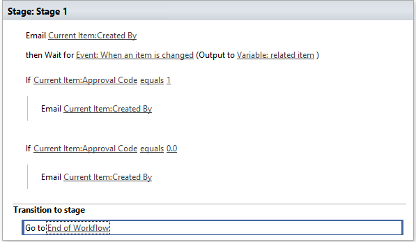

This sample contains files to accompany the MSDN Library walkthrough of the same name http://msdn.microsoft.com/en-us/library/dn246942.aspx.
In the walkthrough, you’ll create a workflow for requesting and approving time off, hosting a list on SharePoint for Office 365. You’ll also build a client application in HTML so that managers can approve or deny those requests on mobile devices.
By using LightSwitch, you can create mobile applications that access and update SharePoint workflows, which help ensure that business processes are performed in a particular sequence. For example, you might use a workflow to route a document for approval or to process a payroll.
The walkthrough requires Visual Studio 2012 Update 2. To host the app, you must also have a SharePoint Developer site on Office 365, which you can get from the Developer Center for Apps for Office and SharePoint.
As your first steps in creating your application, you'll create a SharePoint list for requesting time off and then design a workflow for approving the requests.
In a web browser, open your SharePoint Developer site by entering the URL https:// Account.sharepoint.com/sites/Developer, where Account is the name of your Office 365 developer account.
On the Office 365 menu bar, choose the Settings icon, and then choose the Site Settings menu item.
In the Web Designer Galleries list, choose List Templates.
On the Web Designer Gallery page, on the menu bar, choose Files, Upload Document.
In the Add a Template dialog box, choose the browse button, locate the TimeOffListTemplate.stp template file in the sample download, and then choose the OK button.
In the List Template Gallery dialog box, choose the Save button.
On the Office 365 menu bar, choose the Settings icon, choose Site Contents, choose the add an app link, and then choose Request Time Off.
In the Adding Custom List dialog box, name the list Request Time Off, and then choose the Create button.
The list is added to the Site Contents page.
On the Site Contents page, choose the Request Time Off list icon to open the list.
On the menu bar, choose List, and then, on the ribbon, choose Workflow Settings, Create a Workflow in SharePoint Designer...
